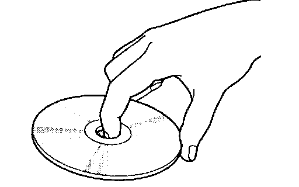
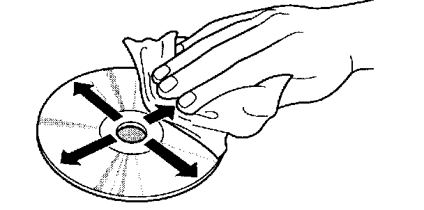
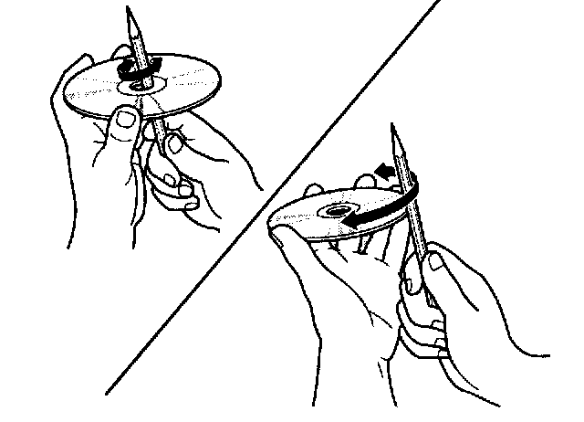

Handling and Inspecting Compact Discs

^ Handle a CD by its edges; never touch the flat surfaces. Contamination from fingerprints, liquids, felt-tip pens, and labels can cause the CD to not play properly, or possibly jam in the drive.

^ When cleaning a disc, use a clean soft cloth. Wipe across the disc from the center to the outside. Do not wipe the disc in a circular motion.

^ A new CD may be rough on the inner and outer edges. The small plastic pieces causing this roughness can flake oft and fall on the recording surface of the disc, causing skipping or other problems. Remove these pieces by rubbing the inner and outer edges with the side of a pencil or pen.
^ Various accessories are available to protect CDs and improve the sound quality of CDs. These accessories increase the thickness or diameter of the discs and should not be used in CD changers.